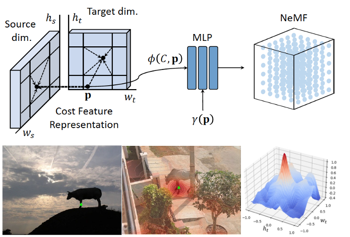

|
UC Berkeley
Postdoctral scholar
Mar. 22 - Present
|
ICSI
Postdoctoral researcher
Mar. 22 - Present
|
Adobe research
Research intern
May. 21 - Nov. 21
|
Yonsei university
Doctor of philosophy
Mar. 16 - Feb. 22
|
News
- [10/2022] One paper accepted by BMVC'22
- [09/2022] One paper accepted by NeurIPS'22
- [03/2022] Joined UC Berkeley / ICSI as a postdoctoral scholar
|
|
|
COAT: Correspondence-driven Object Appearance Transfer
Sangryul Jeon, Zhifei Zhang, Zhe Lin, Scott Cohen, Zhihong Ding, Kwanghoon Sohn
BMVC 2022
abstract |
Semantic correspondence is playing an increasingly important role in photorealistic style transfer, especially on objects with prior structural patterns like faces and cars. Unlike traditional methods that are blind to object/non-object regions and spatial correspondence between objects, we propose a new model called correspondence-driven object appearance transfer (COAT), which leverages correspondence to spatially align texture features to content features at multiple scales. Our model does not require extra supervision like semantic segmentation or body parsing and can be adapted to any given generic object category. More importantly, our multi-scale strategy achieves richer texture transfer, while at the same time preserving the spatial structure of objects in the content image. We further propose the correspondence contrastive loss (CCL) with hard negative mining during the training, boosting appearance transfer with improved disentanglement of structural and textural features. Exhaustive experimental evaluation on various objects demonstrates our superior robustness and visual quality as compared to state-of-the-art works.
|
|

|
Neural Matching Fields: Implicit Representation of Matching Fields for Visual Correspondence
Sunghwan Hong, Jisu Nam, Seokju Cho, Susung Hong, Sangryul Jeon, Dongbo Min, Seungryong Kim
NeurIPS 2022
abstract |
Existing pipelines of semantic correspondence commonly include extracting high-level semantic features for the invariance against intra-class variations and background clutters. This architecture, however, inevitably results in a low-resolution matching field that additionally requires an ad-hoc interpolation process as a post-processing for converting it into a high-resolution one, certainly limiting the overall performance of matching results. To overcome this, inspired by recent success of implicit neural representation, we present a novel method for semantic correspondence, called neural matching field (NeMF). However, complicacy and high-dimensionality of a 4D matching field are the major hindrances, which we propose a cost embedding network to process a coarse cost volume to use as a guidance for establishing high-precision matching field through the following fully-connected network. Nevertheless, learning a high-dimensional matching field remains challenging mainly due to computational complexity, since a naive exhaustive inference would require querying from all pixels in the 4D space to infer pixel-wise correspondences. To overcome this, we propose adequate training and inference procedures, which in the training phase, we randomly sample matching candidates and in the inference phase, we iteratively performs PatchMatch-based inference and coordinate optimization at test time. With these combined, competitive results are attained on several standard benchmarks for semantic correspondence.
|
|
{kind=link}